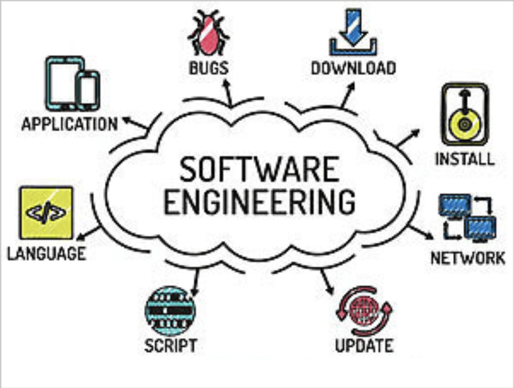

Me along with 7 other team members had 16 weeks to create a web application that would make meet our clients standards but also create a beautiful website at the end. Our client Laura, wanted to create a non-profit organization where people can go online to colunteer to any event they choose. We had milestones that we had to meet every or every other week. This is so we make sure we were on track and watch for our progress throughout the project. In this project, we are called “Team Roots” and our website is called “Voluntree”. In this project, we are called “Team Roots”. We create this web application to her liking and her expectations. This project was created using IntelliJ, Javascript, HTML, Meteor, and GitHub.
The problem: The problem is that there are many people who want to volunteer, but they face many challenges when it comes to finding opportunities and connecting with organizations that offer volunteer services.
The solution: Our client, the Voluntree, aims to remove the friction between volunteers and organizations. They want to focus on creating a platform that easily allows volunteers to find opportunities to serve in their communities, and for organizations to share their service opportunities. It is an all-in-one application that aims to benefit the community.
My contributions to this project include creating the nav-bar community page, and footer. I also helped with the design of the home page and the profile page along with testing the application/documentation of this project.
In ICS 414, this course alone can help you gain experience and skills needed to succeed in the real world. You will be able to gain more knowledge and experience with different designs such as UI, application design, and more. You’ll tap in to your creative side where you can explore more ways to make a web application more appealing to the users eye. I had fun figuring out the layout of the landing page along with what different font to use that fit the aesthetic. Each semester a new client provides an outline of their expectations on their future website. Past projects included HACC-Hui, GHG-Tracker, Volunteer Ally and many more. HACC-Hui is one reason why I was interested in wanting to take this class.
Working on this project was a really great experience to have while working with other great minds, it mimics what a real-life project collaboration would be like. Its similar to the ICS 314 class but ICS 414 is where you take all the skills learned from the beginner class to a more professional setting. I learned what it was like to work with a team and how to communicate with other team members when putting all of my software engineering skills to use. I 100% recommend this class to other ICS students in Manoa because you will gain experiences with a variety of design domains, including user interface design, applicatoin design, data design, security design, and requirements design. It does get easier after the beginner class, there are no exams, lectures, or quizzes like any other traditional class. I would say it was quite fun and easy considering the workload was very light and could go at our own pace of building a website. I’m glad I took this class, it gave me more confidence in my ability to become a software engineer.